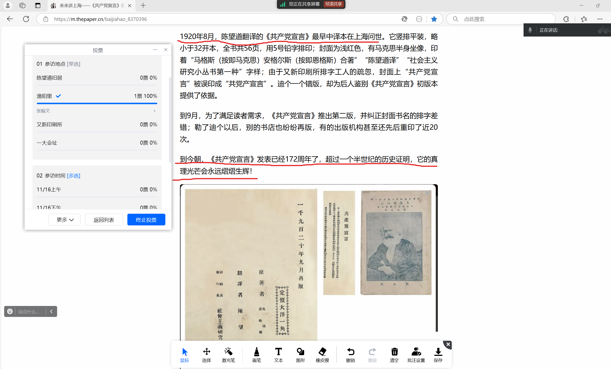
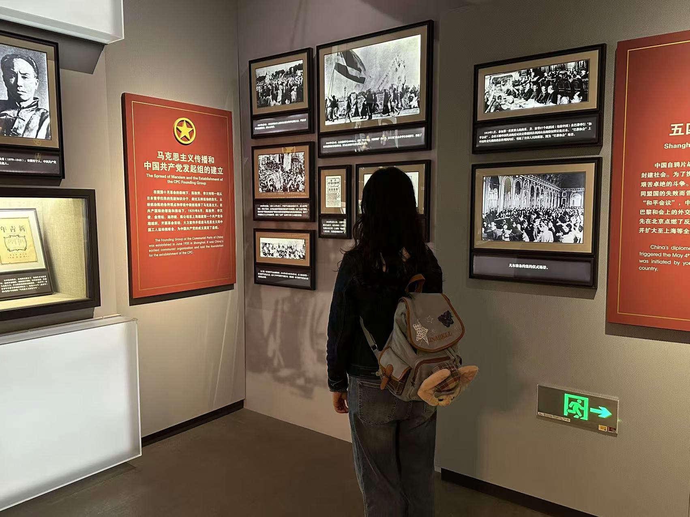

2024年秋季学期日常化实践 | “文化强国”战略下的红色文化发展新动能——以《共产党宣言》为例
文化是一个国家综合国力的重要组成部分。我国拥有悠久的历史和灿烂的文化，这些优秀传统文化资源是提升文化软实力的宝贵财富。在中华民族伟大复兴的时代背景下，建设“文化强国”，提升文化软实力的重要性达到了前所未有的高度。《共产党宣言》是马克思主义从上海往全国传播的开始，《共产党宣言》中译本的传播史对研究红色文化发展新动能有重大意义。 围绕实践内容，成员们首先展开了热烈的讨论，我们以线上线下共同开展讨论会议的形式，确保每位成员的参与度。经过一致同意，决定以参访为主，辅以实践后总结归纳开展活动，并通过集体投票，确定了参访地点和时间。随后，按照分工，成员们分别完成了对场馆的初步了解和对主题的初步认识。紧紧围绕项目主旨，结合各成员特长，分成两小组开展第1团支部秋季日常化实践参访活动，组员们了解场馆开关时间，与有关工作人员沟通争取合作，在两周内形成了完备的参访方案，同时对红色文化的传播新动能提出了自己的见解。
2024年11月17日，2024级外文1班本科生第1团支部的六名成员分别前往又新印刷馆和渔阳里进行秋季日常化实践，探索《共产党宣言》的诞生、传播以及红色文化发展新动能。 第一组同学来到了又新印刷所。 又新印刷所是中国历史上具有特殊意义的地方，见证了首部《共产党宣言》中文全译本的诞生，更是马克思主义在中国传播历程中的一座永恒的灯塔。作为复旦大学的学生，同学们深受陈望道老校长以及早期共产党人精神的鼓舞与感召，怀揣着热忱和信仰探访又新印刷所。

又新印刷所旧址幽静肃穆。进门便是共产党宣言诵读会厅，一楼主要是史迹陈列，展示了数种语言的《共产党宣言》译本以及旧时代的印刷机仿真模型，墙上文字讲述了又新印刷所的发展演变历程，一件件印刷文物和图片无不生动展现了马克思主义在中国早期传播的历史画卷。 二楼为体验区。同学们在工作人员指引下观看了《真理的味道是甜的》影片，进行了《共产党宣言》片段印刷文字书法临摹，阅览了《共产党宣言》非中文译本的电子书，领略了马克思主义真理的力量以及永恒的灯塔真正意义。 走进这幢古朴的砖木结构建筑，同学们仿佛穿越时空，回到了那个充满变革与探索的年代。同学们细细品读陈列在馆内的《共产党宣言》译文时，陈望道先生在义乌老家的柴房里伏案的身影映入脑海。站在这一间小小的砖木建筑中，同学们仍为百年前共产党人的坚定信仰和顽强毅力所感动。是他们，共同书写了这段波澜壮阔的历史篇章。他们的精神，如同璀璨的星辰，永远照亮着我们前行的道路。 这次又新印刷所之旅，让同学们感慨万千。倪苏旸同学不禁感叹，“回溯中共百年征途，自红船启航，便矢志不渝，以苍生为念，民族复兴为鹄，踏破荆棘，于革命烽火、建设洪波、改革浪潮中，屡建震古烁今之勋业，功绩赫赫，若丰碑入云，举世同瞻。外语人仰止其高风，渴慕投身其间，仗专业之利刃，期冀华夏正声，扬于国际之穹宇，卫家国利权，献身心于寰宇和平。” 陶思谦同学坚定表示，“马克思主义的真理光辉，如同永不熄灭的灯塔，始终指引着我们追寻理想社会的脚步。作为新时代的青年，我们不仅要学好外国语，更要深入学习和理解马克思主义的思想精髓，将其内化于心、外化于行。”

王婷同学收获颇多，“参访又新印刷所，不仅是一次简单的历史文化之旅，更是一次心灵的触动。它让我更加珍惜今天的和平与发展，感受中国共产党的光辉历程，并激励我不忘初心，牢记使命，传承红色精神，赓续红色血脉，增强社会责任感和使命感！” 另一组同学来到了渔阳里参访。 渔阳里是中国共产主义青年团的发源地之一，见证了中国早期共产主义运动的光辉历程。同学们参访渔阳里，深入学习党的历史，传声红色基因，增强团员的使命感与责任感。

到达渔阳里后，同学们认真参观纪念馆里的展览。馆内陈列着许多珍贵的历史文物和照片，墙上挂着黑白影像，记录着陈独秀、李达、李汉俊等革命先辈在此策划、讨论、工作的情景。导览员细致地讲解着这里曾是中国共产党上海发起组的办公地点，是中国共产党诞生前的重要活动基地。在幽静的房间里，木制的桌椅、简单的摆设，让人仿佛感受到当年先驱们为国家命运殚精竭虑的场景。 随着参观的深入，同学们进入了一个小型展厅，那里展示着中国共产党早期发展的历史轨迹。从马克思主义在中国的传播，到党的一大在上海的召开，渔阳里在这些重要历史事件中扮演了不可或缺的角色。看着那些泛黄的文献和革命先驱们坚定的面容，同学们的心情久久不能平静。
作为共产党早期组织的诞生地，渔阳里纪念馆内陈列着许多珍贵的历史文物和文献资料。每一件展品都让同学们对那段历史有了更加直观的认识。一幅幅图片、一段段文字，都生动地展现了中国共产党从无到有、从小到大的艰难历程。在那个风雨如晦的年代，革命先辈们以非凡的勇气和智慧，点燃了民族复兴的希望之火。他们在极其艰苦的环境中，坚定地传播革命思想，为新中国的诞生奠定了坚实的基础。 参观结束后，同学们思绪万千。奚霁扬同学深刻体会到今天幸福生活的来之不易。她说：“先辈们的无私奉献和坚定信念是我们如今享有和平与繁荣的重要基石。渔阳里不仅是一个历史遗址，更是一座精神丰碑，激励着我们铭记历史，珍惜当下，勇敢面对未来的挑战。” 顾好同学表示作为一名当代大学生，她深感肩上的责任重大。“我们应该继承和发扬革命先辈们的光荣传统，不忘初心，牢记使命，为实现中华民族的伟大复兴而努力奋斗！本次参访不仅是一次历史的回顾，更是一次精神的洗礼。它让我更加明确了自己的方向，也让我更加珍惜现在的生活。我将带着这份感悟，继续在新时代的征程中，书写属于自己的青春篇章。” 在本次参访渔阳里和又新印刷所的秋季日常实践活动中，成员们以中华优秀传统文化为主线，围绕探索“文化强国”战略下的红色文化发展新动能，深入了解了《共产党宣言》中译本在上海的诞生、传播和早期党组织的建立史，厚植文化自信自强，从而切身感受到传承好红色精神与传统文化，打造文化强国的青年使命与青年责任。